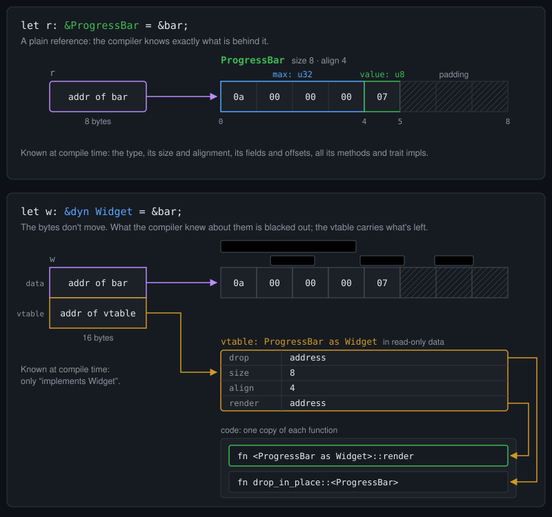
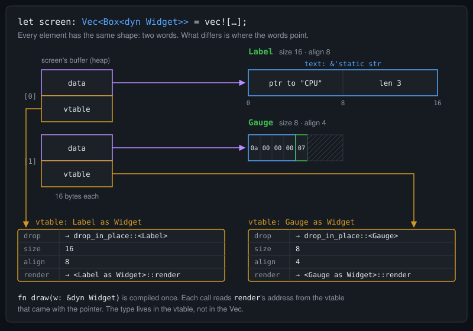
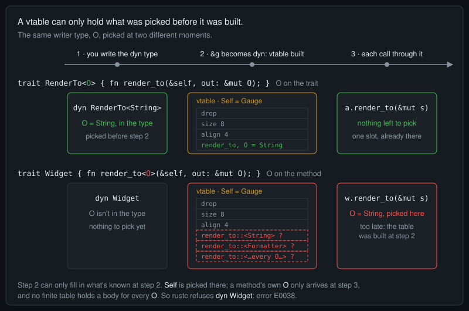
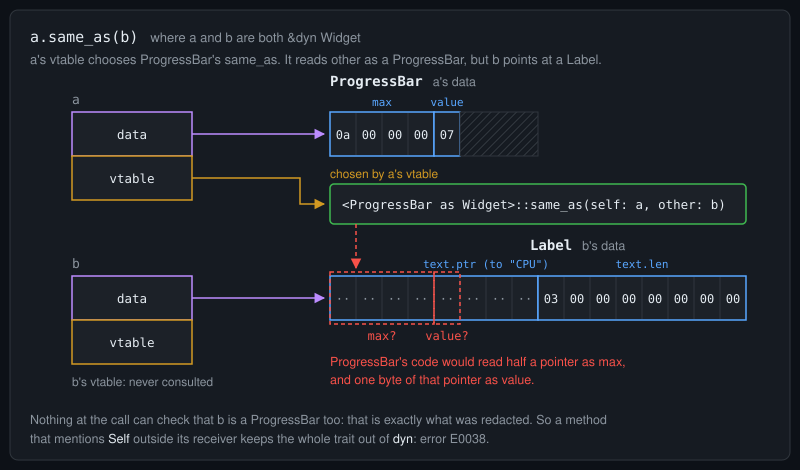

Telex
Telex
What dyn Redacts: Type Erasure in Rust
Picture a struct in memory: a known size, fields at fixed offsets, padding between them. The compiler knows all of it, along with every method the type has. Turn a reference to it into a &dyn Widget and most of that knowledge is blacked out. The bytes don't change. What changes is what the code holding the pointer is allowed to know.
That redaction is type erasure. This post shows exactly what it removes, what survives, and why that decides which traits can be used as dyn at all, including where generics can and can't go.
It builds on two pieces of groundwork: a value's bytes don't contain its functions, and function names become addresses before a program runs. If either is new, start with Where Your Rust Program Lives, a short illustrated post.
Every example was compiled with rustc 1.97.0, edition 2024, on x86_64, so pointers are 8 bytes. A trait that can be used as dyn is called dyn compatible; older docs and many answers online call it object safe.
1. The redaction
Start with one widget, and ask rustc what it knows about it:
Compiles.
use std::mem::offset_of;
trait Widget {
fn render(&self) -> String;
}
struct ProgressBar {
value: u8,
max: u32,
}
impl Widget for ProgressBar {
fn render(&self) -> String {
format!("[{}/{}]", self.value, self.max)
}
}
fn main() {
// What the compiler knows about ProgressBar
println!(
"ProgressBar: size {}, align {}",
size_of::<ProgressBar>(),
align_of::<ProgressBar>()
);
println!(
" max at offset {}, value at offset {}",
offset_of!(ProgressBar, max),
offset_of!(ProgressBar, value)
);
let bar = ProgressBar { value: 7, max: 10 };
let r: &ProgressBar = &bar;
let w: &dyn Widget = &bar;
// The two pointers
println!(
"&ProgressBar: {} bytes, &dyn Widget: {} bytes",
size_of_val(&r),
size_of_val(&w)
);
println!("same address: {}", std::ptr::addr_eq(r, w));
// What survives, read through w
println!(
"through w: size {}, align {}, render {}",
size_of_val(w),
align_of_val(w),
w.render()
);
}Output:
ProgressBar: size 8, align 4
max at offset 0, value at offset 4
&ProgressBar: 8 bytes, &dyn Widget: 16 bytes
same address: true
through w: size 8, align 4, render [7/10]rustc put max first and value after it, leaving three bytes of padding at the end. With the default layout the compiler may reorder fields like that; field order isn't part of a struct's contract.
Both references point at the same address, but one is twice as wide. Here is what each one carries:

dyn reference carries a second word that points at a vtable, whose addresses lead into the program's code.A &ProgressBar is one word: the address. Everything else lives in the compiler's head. It knows which render goes with these bytes, so r.render() becomes a direct call: a call to one fixed function, whose address is filled in when the program is linked.
Why does w need a second word at all? Because the bytes never contained their functions. render lives in the program's code, one copy for every ProgressBar; the 8 bytes hold max, value and padding, and nothing else. Once the type is redacted, nothing in them leads to render. So a &dyn Widget carries a pointer to a vtable: a small table in read-only data, one per type and trait, holding the addresses the redacted type would have supplied. w.render() is an indirect call: it loads render's address from the table at run time, then calls it.
dyn value can find these things. The hatched padding bytes have no defined value, which is why the figure doesn't show them as zeros.What's redacted, and what survives
Through w, the compiler knows only that the value implements Widget, along with any supertraits Widget has. Blacked out:
- the type's name and identity;
- its size, alignment and layout, as compile-time facts;
- its fields and their offsets;
- its inherent methods and every other trait it implements. Auto traits like
Sendsurvive only if you write them in:dyn Widget + Send.
What survives sits in the vtable: how to drop the value, its size and alignment, and one function address per method of the trait. That's how size_of_val(w) and align_of_val(w) printed 8 and 4 above, with no type in sight.
2. Why redact: one type for many
Without the redaction, values of different types can't share a container. A Vec holds one type:
Does not compile.
struct ProgressBar {
value: u8,
max: u32,
}
struct Label {
text: &'static str,
}
fn main() {
let screen = vec![Label { text: "CPU" }, ProgressBar { value: 7, max: 10 }];
}error[E0308]: mismatched types
--> main.rs:11:46
|
11 | let screen = vec![Label { text: "CPU" }, ProgressBar { value: 7, max: 10 }];
| ^^^^^^^^^^^^^^^^^^^^^^^^^^^^^^^^^ expected `Label`, found `ProgressBar`Behind dyn Widget, they can:
Compiles.
trait Widget {
fn render(&self) -> String;
}
struct ProgressBar {
value: u8,
max: u32,
}
struct Label {
text: &'static str,
}
impl Widget for ProgressBar {
fn render(&self) -> String {
format!("[{}/{}]", self.value, self.max)
}
}
impl Widget for Label {
fn render(&self) -> String {
self.text.to_string()
}
}
// Compiled once, for every widget there will ever be
fn draw(w: &dyn Widget) {
println!("{}", w.render());
}
fn main() {
let screen: Vec<Box<dyn Widget>> = vec![
Box::new(Label { text: "CPU" }),
Box::new(ProgressBar { value: 7, max: 10 }),
];
for w in &screen {
draw(w.as_ref());
}
println!("each element: {} bytes", size_of::<Box<dyn Widget>>());
}Output:
CPU
[7/10]
each element: 16 bytes
Label and the ProgressBar differ in size, layout and vtable, and the Vec doesn't need to know.That's what erasing the type buys. Every Box<dyn Widget> has the same size, so one Vec holds them all, and draw is compiled once rather than once per widget type.
The alternative is a generic fn draw<W: Widget>(w: &W). Nothing is redacted: the compiler makes one copy per type and calls render directly. But each copy takes one known W, so a list of mixed widgets is out of reach. Erasure trades that compile-time knowledge for one shape and one copy, paid for with an indirect call through the table.
3. The rule: picked before the vtable is built
The vtable is built at one specific moment: where a concrete value becomes a dyn value, as in let w: &dyn Widget = &bar;. At that point the compiler still knows Self is ProgressBar, so it can fill in ProgressBar's drop, size, alignment and methods. After that point, nothing can be added to the table.
So every type a method depends on must be known by then. Generics are where this bites. Here a widget renders into any writer, and the caller picks the writer type at each call:
Does not compile.
use std::fmt::Write;
trait Widget {
fn render_to<O: Write>(&self, out: &mut O);
}
struct ProgressBar {
value: u8,
max: u32,
}
impl Widget for ProgressBar {
fn render_to<O: Write>(&self, out: &mut O) {
write!(out, "[{}/{}]", self.value, self.max).unwrap();
}
}
fn main() {
let bar = ProgressBar { value: 7, max: 10 };
let w: &dyn Widget = &bar;
let mut s = String::new();
w.render_to(&mut s);
}error[E0038]: the trait `Widget` is not dyn compatible
--> main.rs:20:17
|
20 | let w: &dyn Widget = &bar;
| ^^^^^^ `Widget` is not dyn compatible
|
note: for a trait to be dyn compatible it needs to allow building a vtable
for more information, visit <https://doc.rust-lang.org/reference/items/traits.html#dyn-compatibility>
--> main.rs:4:8
|
3 | trait Widget {
| ------ this trait is not dyn compatible...
4 | fn render_to<O: Write>(&self, out: &mut O);
| ^^^^^^^^^ ...because method `render_to` has generic type parameters
= help: consider moving `render_to` to another trait
= help: only type `ProgressBar` implements `Widget`; consider using it directly instead.The writer type O isn't erased: the caller knows it at every call. The problem is timing. Each O needs its own compiled copy of render_to, so the vtable would need a slot for every writer type anyone might ever pass, and the table was finished before any caller showed up.

O, on the trait (top) and on the method (bottom). Only the top one is picked before the vtable is built.There are three ways out, and each is about when O gets picked.
Pick it earlier: put the parameter on the trait. Then dyn RenderTo<String> names O in the type itself, and the vtable built for it holds one render_to, for String.
Don't pick it at all: erase the argument too. A &mut dyn Write is a writer with its own vtable, so one compiled render_to serves every writer, and it fits in the table.
Compiles.
use std::fmt::Write;
struct ProgressBar {
value: u8,
max: u32,
}
// Way out 1: put the parameter on the trait. The dyn type picks it.
trait RenderTo<O: Write> {
fn render_to(&self, out: &mut O);
}
impl<O: Write> RenderTo<O> for ProgressBar {
fn render_to(&self, out: &mut O) {
write!(out, "[{}/{}]", self.value, self.max).unwrap();
}
}
// Way out 2: erase the argument too. One body serves every writer.
trait Widget {
fn render_to(&self, out: &mut dyn Write);
}
impl Widget for ProgressBar {
fn render_to(&self, out: &mut dyn Write) {
write!(out, "[{}/{}]", self.value, self.max).unwrap();
}
}
fn main() {
let bar = ProgressBar { value: 7, max: 10 };
let mut s = String::new();
let a: &dyn RenderTo<String> = &bar;
a.render_to(&mut s);
let b: &dyn Widget = &bar;
b.render_to(&mut s);
println!("{s}");
}Output:
[7/10][7/10]std has both designs. Hash::hash<H: Hasher> is generic over the hasher, so &dyn Hash is E0038. Display::fmt takes a concrete &mut Formatter instead, so &dyn Display works.
Keep the method, but out of the table. where Self: Sized on a method removes it from the vtable. The rest of the trait works as dyn, and the method can still be called wherever the type is known; only a call through dyn fails:
Does not compile.
use std::fmt::Write;
trait Widget {
fn render(&self) -> String;
fn render_to<O: Write>(&self, out: &mut O)
where
Self: Sized,
{
out.write_str(&self.render()).unwrap();
}
}
struct ProgressBar {
value: u8,
max: u32,
}
impl Widget for ProgressBar {
fn render(&self) -> String {
format!("[{}/{}]", self.value, self.max)
}
}
fn main() {
let bar = ProgressBar { value: 7, max: 10 };
let mut s = String::new();
bar.render_to(&mut s); // fine: Self is known to be ProgressBar
let w: &dyn Widget = &bar; // fine: render_to isn't in the vtable
println!("{s} {}", w.render());
w.render_to(&mut s); // the one call that can't work
}error: the `render_to` method cannot be invoked on a trait object
--> main.rs:33:7
|
8 | Self: Sized,
| ----- this has a `Sized` requirement
...
33 | w.render_to(&mut s); // the one call that can't work
| ^^^^^^^^^Two things the rule allows. Associated types are fine, because the dyn type states them before the table is built: dyn Iterator<Item = u8>. Leave one out, as in plain dyn Iterator, and it's E0191. Lifetime parameters on methods are fine too. Lifetimes never produce separate compiled copies, so fn first<'a>(&self, a: &'a str, b: &'a str) -> &'a str goes through dyn without trouble.
4. Self only in the receiver
The same rule covers Self, from the other side. Self is the one type dyn erases, so a method can't mention it anywhere but its receiver:
Does not compile.
trait Widget {
fn render(&self) -> String;
fn same_as(&self, other: &Self) -> bool;
}
struct ProgressBar {
value: u8,
max: u32,
}
impl Widget for ProgressBar {
fn render(&self) -> String {
format!("[{}/{}]", self.value, self.max)
}
fn same_as(&self, other: &Self) -> bool {
self.value == other.value && self.max == other.max
}
}
fn main() {
let bar = ProgressBar { value: 7, max: 10 };
let w: &dyn Widget = &bar;
println!("{}", w.render());
}error[E0038]: the trait `Widget` is not dyn compatible
--> main.rs:23:17
|
23 | let w: &dyn Widget = &bar;
| ^^^^^^ `Widget` is not dyn compatible
|
note: for a trait to be dyn compatible it needs to allow building a vtable
for more information, visit <https://doc.rust-lang.org/reference/items/traits.html#dyn-compatibility>
--> main.rs:3:30
|
1 | trait Widget {
| ------ this trait is not dyn compatible...
2 | fn render(&self) -> String;
3 | fn same_as(&self, other: &Self) -> bool;
| ^^^^^ ...because method `same_as` references the `Self` type in this parameter
= help: consider moving `same_as` to another trait
= help: only type `ProgressBar` implements `Widget`; consider using it directly instead.&Self is just a pointer, so this isn't about size. It's about identity:

dyn Widget values meet in one call. a's vtable picks ProgressBar's code, and b is a Label.Through dyn, a and b can hold different types, and the one thing that could tell the call whether they match is the type that was blacked out. Returning Self fails the same way: E0038's note says the method "references the Self type in its return type", because through dyn there's no telling what type would come back, or how big it is.
The fix is the same escape hatch: where Self: Sized on same_as takes just that method out of the vtable. Where the clause goes matters. On a method, it removes that one method. On the trait, as trait Widget: Sized, it keeps the whole trait out of dyn, because a dyn Widget is never Sized; E0038 then says the trait "requires Self: Sized".
5. The whole story
- What's redacted: the concrete type, with its layout, fields, inherent methods and other traits. The bytes themselves are untouched.
- What survives: a vtable, built where the value becomes
dyn, holding drop, size, alignment and one address per trait method. - Why: so values of different types can share one type, and code over them is compiled once.
- The rule it imposes: everything a method needs must be picked by the time the vtable is built. A trait's parameters and associated types are named in the
dyntype, andSelfis picked at the conversion. A method's own type parameters only arrive later, at each call, so they're out, and so isSelfanywhere but the receiver.where Self: Sizedtakes a method out of the table instead. - The cost: an indirect call per method call, against one compiled copy per type for generics.